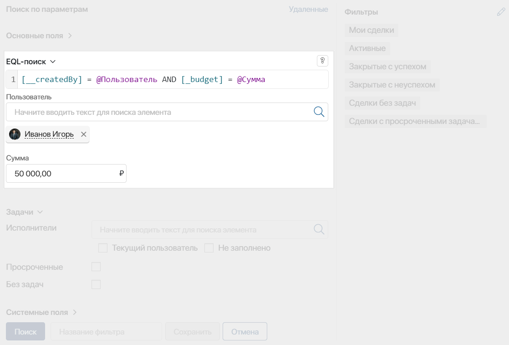

Чтобы найти элемент приложения по параметрам, в EQL-запросе его свойствам задаются определённые значения. Для создания EQL-запроса соблюдаются определённые правила и применяются особенности:
- Для обращения к свойствам приложения используются коды, присвоенные им при создании. Указывать код переменной необходимо в квадратных скобках:
[property_name]. - Указывается операция поиска. Используются стандартные математические знаки или ключевые слова языка EQL365.
- Искомое значение указывается с учётом правил присвоения значений свойствам различных типов.
- Для присвоения значения или его вычисления в запросе можно использовать функции, например, для указания определённой даты или поиска в свойстве типа Пользователи текущего сотрудника.
- Для присвоения значений свойствам в рамках запроса можно создать параметр и обращаться к нему множество раз. Значение параметра указывается после составления запроса в полях, добавленных в окно поиска автоматически.
- Чтобы осуществлять поиск по нескольким условиям, в запрос добавляются логические операторы. При этом можно указывать условие, выполнение которого будет проверяться первым.
- Для составления сложных выборок данных можно использовать подзапросы. Внутри подзапроса можно обращаться к свойствам любого приложения в системе.
- Все составляющие запроса указываются через пробел.
начало примера
Примеры поиска элементов по составленным EQL-запросам
- [company_name] = 'АвтоПром' or [company_name] like 'Авто' — поиск элементов приложения Компании, в которых поле Название полностью совпадает с первым указанным значением или содержит второе.
- [__createdAt] = Datetime(2023, 1) and [price] > 4000 — поиск записей приложения Заказы, у которых в поле Дата создания указан январь 2023 года и поле Стоимость содержит значение большее, чем 4 000 рублей.
- [contract] in (select [__id] from [documents.contracts] where [total] > 10000) — поиск записей приложения Контрагенты, где в поле Договор указан элемент приложения, в котором сумма превышает 10 000 рублей.
конец примера
Присвоение значения свойствам различных типов
Для корректной обработки EQL-запроса все его составляющие указываются через пробел. При написании запроса можно использовать опцию автозаполнения строки. Чтобы вызвать выпадающее меню с доступными свойствами, функциями и операторами, нажмите Ctrl + Пробел.
Для указания значений в различных типах свойств из контекста приложений используются определённые правила. Они приведены в таблице:
Тип данных |
Правило присвоения значения |
Пример |
Строка |
Задаётся строкой в одинарных кавычках. |
|
Число, Деньги |
Используется значение искомого числа без кавычек. Дробные числа разделяются точкой. |
|
Выбор «да/нет» |
Задаётся значением |
|
Дата/время |
Задаётся следующими способами:
Использовать можно укороченное написание части даты, а также указывать время, в том числе с использованием часового пояса.
Период времени относительно текущей даты вычисляется функцией RelativeDatetime('start', 'end'). В круглых скобках указывается начало и конец периода, параметры заключаются в одинарные кавычки и разделяются запятыми. |
Оба запроса используются для поиска поля Дата закрытия со значением позднее, чем 31 января 2023 года после полудня.
|
Категория |
Задаётся кодом категории в одинарных кавычках. |
[payment] in ('half', 'full') — в поле Оплата выбраны значения Частично и Полная предоплата. |
Номер телефона |
Задаётся строкой в одинарных кавычках. |
[phone] = '+71234567890' — поле Телефон заполнено указанным значением. |
Электронная почта |
Задаётся строкой в одинарных кавычках. |
[email] = 'admin@example.com' — поле Электронная почта заполнено указанным значением. |
Ф.И.О |
Задаётся строкой в одинарных кавычках. |
[contact] like 'Иван' — поле Контактное лицо содержит указанное значение. |
Пользователи |
Задаётся строковым представлением идентификатора в одинарных кавычках, без пробелов. Чтобы найти идентификатор пользователя, перейдите в раздел Компания > Сотрудники, выберите нужную карточку и скопируйте значение в url-адресе страницы. |
[responsible] = '95806fe5-f8e8-460c-b2be-ce607068726c' — в поле Ответственный указан определённый пользователь. |
Приложение |
Чтобы найти идентификатор элемента, перейдите на страницу нужного приложения, выберите запись и скопируйте значение в url-адресе страницы.
|
|
Произвольное приложение |
Поиск осуществляется по коду элемента двумя способами:
|
[contract] in (select [__id] from [clients.orders] where [total] > 1000). |
Статус |
Задаётся числовым представлением идентификатора статуса. |
[__status] = 1 — элементу присвоен первый по счёту статус. |
Можно искать элементы, в полях которых не указано никакого значения. Для этого в запросе используется операция Is null или Is empty. Исключения составляют свойства типа Номер телефона и Электронная почта.
Создание параметров в EQL-запросе и их использование
Чтобы указать искомое значение свойства, в рамках запроса можно создать новый параметр. Обращаться к нему в запросе можно множество раз. Значение параметра задаётся после составления запроса. Таким образом оно будет являться не постоянным, а изменяться при каждом поиске.
Параметр создаётся с помощью значка @ и произвольного названия на латинице или кириллице. После добавления параметра в окне поиска отображается дополнительное поле с его названием. Составив запрос, вы можете указать в дополнительном поле значение параметра и запустить поиск.

Если в дополнительных полях не заданы значения, выражение с использованием пользовательских параметров можно сохранить как фильтр. Таким образом сотрудники смогут применить составленный EQL-запрос, определить значения свойств по параметру и выполнять поиск различной информации.
начало примера
Пример запроса
[__createdBy] = @Пользователь AND [budget] = @Сумма — в запросе поля Автор и Бюджет из приложения заданы с помощью параметров. Сотрудник может внести для них определённые значения, указав любого пользователя и сумму, и выполнить поиск элементов с различными автором и бюджетом.
конец примера
Операции поиска
Для присвоения значения в EQL-запросе используются операции поиска. Они могут обозначаться математическими знаками или ключевыми словами языка EQL365.
Операции с использованием знаков
Такие операции строятся по одинаковому принципу. В качестве первого операнда указывается код свойства. Ему присваивается определённое значение. Вторым операндом выступает заданное значение, другое свойство или функция. К таким операциям относятся:
- Равенство — операция =.
Операция проверки точного совпадения. Не рекомендуется использовать со свойствами типа Дата/время, так как точное совпадение значения поля маловероятно.
начало примера
Примеры запросов
- [client] = 'Иванов' — поиск клиента с указанным именем.
- [payment] = [budget] — поиск полей Оплата, совпадающих с полем Бюджет.
- [responsible] = CurrentUser() — поиск элементов с текущим пользователем в качестве ответственного.
конец примера
- Неравенство — операция <>.
Операция проверки исключения точного совпадения.
начало примера
Примеры запросов
- [product] <> 'Оборудование' — поиск заказов, где в поле Продукт не значится указанное значение.
- [payment] <> [budget] — поиск заказов, где поле Оплата не совпадает с полем Бюджет.
- [responsible] <> CurrentUser() — поиск элементов, в которых в качестве ответственного не значится текущий пользователь.
конец примера
- Более чем — операция >.
Операция проверки строгого большего.
начало примера
Примеры запросов
- [price] > 10000 — поиск заказов со стоимостью, превышающей указанное значение.
- [payment] > [budget] — поиск заказов, где поле Оплата больше поля Бюджет.
- [shipping_date] > Datetime(2023, 1, 31, 12) — поиск заказов с датой отгрузки позднее, чем указанная дата и время 12:00.
конец примера
- Больше или равно — операция >=.
Операция проверки нестрогого большего.
начало примера
Примеры запросов
- [price] >= 10000 — поиск заказов со стоимостью, равной или превышающей указанное значение.
- [payment] >= [budget] — поиск заказов, где поле Оплата больше или равняется полю Бюджет.
- [shipping_date] >= Datetime('Today') — поиск заказов с отгрузкой в текущую дату на момент времени 00:00:00 или позднее.
конец примера
- Менее чем — операция <.
Операция проверки строгого меньшего.
начало примера
Примеры запросов
- [price] < 10000 — поиск заказов со стоимостью ниже указанного значения.
- [payment] < [budget] — поиск заказов, где поле Оплата меньше, чем поле Бюджет.
- [shipping_date] < Datetime('Today') — поиск заказов с датой отгрузки ранее, чем текущая дата на момент времени 00:00:00.
конец примера
- Меньше или равно — операция <=.
Операция проверки нестрогого меньшего.
начало примера
Примеры запросов
- [price] <= 10000 — поиск заказов, в которых стоимость ниже или равняется указанному значению.
- [payment] <= [budget] — поиск заказов, где поле Оплата меньше или равняется полю Бюджет.
- [shipping_date] <= Datetime('Today') — поиск заказов с отгрузкой в текущую дату на момент времени 00:00:00 или ранее.
конец примера
Операции с ключевыми словами языка EQL365
- Частичное совпадение строки — операция
LIKE.
Операция LIKE используется для поиска частичного совпадения текста независимо от регистра. Она позволяет находить вхождения указанного значения в любую часть строки, возвращая все строки, содержащие искомый фрагмент.
начало примера
Пример
[responsible] like 'Алекс' — поиск всех элементов, где в поле Ответственный присутствует данное значение.
конец примера
- Полное совпадение строки — операция
LIKEF.
Операция LIKEF позволяет искать точные совпадения текста, а также задавать правила для поиска указанного значения в определённой части строки. Использование операции помогает сузить результаты поиска.
Доступные свойства для использования LIKEF:
Правила для создания запросов с операцией LIKEF:
- символ _ — нижнее подчёркивание обозначает любой один символ. Может использоваться до или после искомого значения;
- символ % — процент указывает, что перед или после искомого значения может находиться любое количество символов;
- комбинирование символов — символы _ и % можно комбинировать и использовать в запросе множество раз для построения сложных шаблонов поиска;
- экранирование символов — если значение содержит управляющие символы (_ или %), их нужно экранировать обратной косой чертой \.
начало примера
Примеры
- [client] likef 'Иван' — найдёт записи, где поле Клиент содержит точное значение Иван. Например, Иван Краснов, Иван Круглов и т. д.
- [string] likef '_010203' — ищет строки, начинающиеся с любого символа, за которым следует указанное значение 010203.
- [phone] likef '7912%' — вернёт все записи, номер телефона в которых начинается на 7912 и содержит любое количество символов.
- [order_name] likef 'Продукты%10_2024' — находит заказы, где название начинается на значение Продукты, содержит любое количество символов, а оканчиваются на 10, любой один символ и 2024.
- [email] likef '_petrov\%@example%' — найдёт электронные адреса, которые начинаются с одного неизвестного символа, содержат petrov%@example и оканчиваются любым доменом. Знак процента, содержащийся в адресе, экранируется \.
конец примера
Для запросов с операциями LIKE и LIKEF может применяться равнозначность букв е и ё при поиске. Опция используется, если в системе включён фича-флаг collector_enable_equivalentYoE.
- Проверка на отсутствие значения — операция
IS NULLилиIS EMPTY.
Операции IS NULL и IS EMPTY используются в любом регистре для проверки отсутствия значения в указанном поле. Они позволяют находить элементы приложений, у которых поле не содержит данных.
начало примера
Пример
[budget] is null или [budget] is empty — равнозначные запросы для поиска заказов, где не указан бюджет.
конец примера
- Вхождение в множество — операция
IN.
Регистронезависимая операция проверки содержания свойства приложения. Искомые значения указываются в круглых скобках, перечисляются через запятую и не разделяются пробелами. В качестве значения может выступать подзапрос. При использовании в запросе функции поиска текущего пользователя аргументы можно указывать в любом порядке.
начало примера
Примеры запросов
- [order_number] in (6,7,8,9) — поиск всех заказов, в номерах которых содержатся перечисленные числа.
- [client] in ('Алексей', 'Андрей', 'Иванов') — поиск всех клиентов с перечисленными именами.
- [__createdBy] in CurrentUser() или CurrentUser() in [__createdBy] — равнозначные запросы для поиска всех элементов, созданных текущим пользователем системы.
- [orders] in (select [__id] from [documents.contracts] where [total] > 10000) — выборка всех заказов, в договорах которых в поле Сумма указано значение более 10 000 рублей. Подробнее о составлении таких выражений читайте в подзаголовке «Подзапросы».
конец примера
Логические операторы-связки
Логические операторы используются для проверки нескольких условий в одном запросе:
- Логическое И — оператор
ANDобъединяет несколько условия. При этом все условия должны выполняться.
начало примера
Примеры запросов
- [prepayment] = 1000 and [budget] > 3000 — поиск заказов, за которые внесли предоплату равную 1 000 рублей и бюджет которых превышает 3 000 рублей.
- [__createdAt] >= Datetime(2023, 1) and [__createdAt] < Datetime(2023, 3) — поиск всех элементов, которые были созданы за январь и февраль 2023 года, т. е. дата равняется или больше января и не превышает март.
конец примера
- Логическое ИЛИ — оператор
ORобъединяет несколько условий и запрашивает выполнение хотя бы одного из них.
начало примера
Примеры запросов
- [order_number] in (6,7) or [client] is null — в результате поиска отобразятся заказы, в номерах которых присутствуют указанные числа или для которых не заполнен клиент.
- [client] like 'Алекс' or [orders] in (from [documents.contracts] select [__id] where [total] > 10000) — поиск заказов, в которых имя клиента содержит указанное значение или сумма договора превышает 10 000 рублей.
конец примера
- Логическое НЕ — оператор
NOTприменяется для одного условия. Оно не должно выполняться.
начало примера
Примеры запросов
- not [payment] is null — поиск всех счетов, по которым внесена оплата, т. е. в поле значится не пустое значение.
- not [client_name] in ('Петров', 'Иванов') — поиск заказов, в которых имя клиента не совпадает с указанным значением.
конец примера
Приоритеты логических операций
При использовании больше двух операций в одном запросе вы можете указать, выполнение какого условия является приоритетным. Оно проверяется в первую очередь и будет отображаться в результатах поиска выше других. Для обозначения приоритетного выражения в сложных запросах используются круглые скобки.
начало примера
Примеры запросов
- not ([client_name] like 'Алексей' or [client_name] like 'Андрей') — в результате поиска будут выбраны заказы, имена клиентов которых не содержат первое или второе указанное значение.
- (not [client_name] = 'Алексей') and [client_name] like 'Ал' — в результате поиска отобразятся заказы, в которых имя клиента не равняется первому значению — Алексей, но содержит второе значение — Ал.
конец примера
Функции
Функции в EQL-запросах можно использовать для присвоения значения свойствам приложения, а также для его вычисления:
- Дата —
Datetime().
Функция определяет представление заданной даты. Параметры прописываются в круглых скобках с перечислением через запятую.
В качестве параметров указываются числовые значения года, месяца, дня, часа, минуты, секунды и строковое представление часового пояса. Обязательным параметром является только обозначение года, остальные — указываются опционально. Если вы не выбрали время, в запросе принимается значение ноль часов, минут и секунд.
Вы можете задать дату функциями, которые вычисляются в момент выполнения запроса:
- Сегодня —
Todayтекущая дата; - Сейчас —
Nowтекущее время.
начало примера
Примеры запросов
- [__createdAt] > Datetime(2022) — поиск элементов с датой создания позднее 2022 года.
- [__createdAt] > Datetime(2023, 1, 31) — поиск элементов с датой создания позднее, чем 31 января 2023 года.
- [finish_date] > Datetime(2023, 2, '+09:00') — поиск заказов, сборку которых завершили позднее, чем февраль 2023 года с учётом часового пояса.
- [__createdAt] < Datetime('Now') — поиск элементов с датой создания ранее, чем текущее время.
- [closing_date] > Datetime('Today') — поиск сделок, дата закрытия которых позднее, чем текущая дата.
конец примера
- Время —
Time().
Функция определяет представление времени, заданное в параметрах. В качестве параметров указываются числовые значения часа, минуты и секунды. Обязательным параметром является только обозначение часа. Параметры прописываются в круглых скобках с перечислением через запятую.
начало примера
Примеры запросов
- [closing_time] < Time(17) — поиск сделок, закрытых позднее, чем 17:00.
- [closing_time] < Time(12, 30, 00) — поиск сделок, закрытых позднее, чем 12:30.
конец примера
Функция определяет временной промежуток, который рассчитывается относительно текущей даты, с учётом заданной в системе временной зоны. Для вычисления функции используются операторы = или IN.
Период поиска прописывается в скобках. В функции всегда указываются параметры начала и окончания периода, которые заключаются в одинарные кавычки и разделяются запятой. Для вычисления каждого параметра используется цифробуквенное выражение или их комбинация:
- цифровое обозначение — положительный или отрицательный количественный диапазон вычисления периода. Для поиска прошедшего периода используется знак минус, для последующих во времени дат — плюс. Ноль обозначает текущую дату и не требует использования знака плюса;
- буквенной обозначение — разряд временного промежутка: час, день, год и т. д. Может указываться на английском и русском языках.
Доступные буквенные обозначения разряда временного промежутка
|
Вычисление параметров выполняется последовательно. При этом расчёт осуществляется не в единицах от текущей даты, а по календарному периоду времени.
Например, если текущая дата — 11 декабря 2023 года, и в функции начало периода задано параметром '-1m' (минус один месяц), то вычитаться будут не 30 дней от наступившей даты, а календарный месяц. Таким образом началом периода в результатах поиска будет считаться 1 ноября 2023 года.
Особенности вычисления параметров:
start— параметр начала периода относительно текущей даты. В результат поиска включается вычисленное значение. Примеры ввода параметра:- '0h' — поиск с текущей даты и начала текущего часа;
- '+1m' — поиск с начала следующего месяца;
- '-1w+1d' — дата начала поиска рассчитывается следующим образом: от текущего дня отнимается календарная неделя и прибавляется один день. Так, если текущий день недели — понедельник, поиск производится с начала вторника прошлой недели.
end— параметр окончания периода относительно текущей даты. При вычислении к наименьшему отрезку времени, указанному в функции, добавляется единица. Полученное временное значение не включается в поиск, т. е. учитываются все значения являющиеся меньшими, но не равными вычисленному результату. Примеры ввода параметра:- '0h' — поиск до конца текущего часа;
- '0d' — поиск до конца текущего дня;
- '+1m' — до конца следующего месяца;
- '-1w+1d' — дата окончания поиска рассчитывается следующим образом: вне зависимости от текущего дня недели расчёт начинается с понедельника прошлой календарной недели. Затем прибавляется прописанный в параметре один день, а также единица наименьшего отрезка времени — в данном случае это ещё один день. При вычислении получаем среду прошлой недели. Поскольку в окончание периода включаются все значения меньшие, но не равные вычисленному параметру, поиск производится до конца вторника прошлой недели.
Обратите внимание, в результате вычисления начало периода не должно быть большим или равным его окончанию, а окончание — меньшим или равным началу. При составлении такого запроса вы увидите ошибку о неверно указанном формате относительных дат.
начало примера
Примеры наиболее распространённых запросов
- [date] IN RelativeDatetime('0d', '0d') — поиск за текущую дату.
- [date] IN RelativeDatetime('-1d', '-1d') — поиск за предыдущий день.
- [date] IN RelativeDatetime('0w', '0w') — элементы за текущую неделю.
- [date] IN RelativeDatetime('-1w', '-1w') — поиск за прошлую неделю.
- [date] IN RelativeDatetime('-7d', '-1d') — элементы за предыдущие семь дней.
- [date] IN RelativeDatetime('+1w', '+1w') — учитывается вся следующая неделя.
- [date] IN RelativeDatetime('-1w+2d', '-1w+3d') — поиск с прошлой среды до конца прошлого четверга.
- [date] IN RelativeDatetime('-1m', '+1m') — поиск с начала прошлого месяца и до конца следующего месяца.
- [date] IN RelativeDatetime('0y+3q','0y') — элементы за третий и четвёртый квартал текущего года, т. е. поиск с третьего квартала по конец года.
- [date] IN RelativeDatetime('0y-2m', '0y-1m') — поиск за последний и предпоследний месяц прошлого года.
- [date] IN RelativeDatetime('+1y', '+1y0m') — учитывается весь первый месяц следующего года.
конец примера
- Количество —
Count().
Функция определяет количество элементов параметра. В качестве параметра может выступать свойство, содержащее множественное значение или подзапрос. В операциях сравнения функция указывается перед вычисляемым параметром без пробела.
начало примера
Примеры запросов
- count([orders]) > 3 — поиск компаний, для которых создано более трёх заказов.
- count(from [documents.contract] where parent.[__id] in [client] and [total] > 10000) > 2 — поиск компаний, для которых создано более двух договоров, где общая сумма превышает 10 000 рублей.
конец примера
Функция возвращает идентификатор текущего пользователя. Используется для определения значения свойства приложения.
начало примера
Пример
[responsible] = CurrentUser() — заказы, за которые ответственен текущий пользователь.
конец примера
Функция получения элемента из поля типа Произвольное приложение. Возвращает элементы, поля которых ссылаются на определённый элемент другого приложения. В функции указывается путь до элемента, включая код раздела и приложения, в котором он создан, и строковое представление его идентификатора.
Параметры прописываются двумя способами. Каждое значение заключается в одинарные кавычки и разделяется запятой. Также весь путь можно указать в одинарных кавычках и объединить параметры двоеточием.
начало примера
Примеры запросов
- [bill] = Refitem('documents', 'bills', '018a8dbb-04cd-7798-a363-aae245148b10') или [bill] = Refitem('documents:bills:018a8dbb-04cd-7798-a363-aae245148b10') — равнозначные запросы, в которых осуществляется поиск по полю Счет в элементах приложения Договоры. В результате отобразится договор, к которому привязан определённый счёт из другого раздела и приложения.
- [bill] is null — поиск договоров, в которых не указан счёт, т. е. нет ссылки на элемент приложения Счета.
конец примера
Подзапросы
Подзапрос — это вложенный EQL-запрос, который является частью другого запроса. При составлении выражения из нескольких запросов подзапрос выделяется круглыми скобками.
начало примера
Пример
not ([__name] like 'Алекс' or [__name] like 'Ан') — найдёт все элементы, у которых название не содержит значения Алекс или Ан.
конец примера
Операторы выборки в подзапросах
Подзапросы позволяют обращаться к элементам из других разделов системы, а также к свойствам типа Произвольное приложение. Для этого применяются операторы:
SELECT_FROM_WHEREилиFROM_SELECT_WHERE;FROM_WHERE— используется для функции определения количестваCount(). Уточняет, в каком приложении создано свойство, по которому осуществляется поиск.
Синтаксис операторов выборки
В каждом подзапросе указываются:
- Источник данных — код приложения, из которого выбираются данные.
- Свойство для поиска — определяет, какое именно свойство в источнике данных используется для поиска.
- Условие поиска — критерий, по которому выполняется фильтрация данных.
начало примера
Примеры
- [clients] in (select [__id] from [clients.orders] where [total] > 1000) — выборка элементов приложения Клиенты, для которых созданы заказы с суммой более 1 000 рублей.
- [contracts] in (select [__id] from [clients.leads] where [__name] = 'ООО Пристань') — поиск договоров из свойства типа Произвольное приложение, где имя компании совпадает с указанным в запросе.
- count(from [bookstore.book] where parent.[__id] in [authors]) > 0 — поиск авторов, в карточке которых указана хотя бы одна книга.
конец примера
Вложенные подзапросы
Подзапросы могут включать в себя другие подзапросы. Чтобы понимать уровень вложенности, для обращения к свойствам приложения используются операторы:
PARENT— используется для обращения к свойствам родительского приложения;ROOT— обращается к полям корневого приложения, которое указывается в начале запроса. Например, это приложение, на странице которого осуществляется EQL-поиск.
начало примера
Примеры запросов
- count(from [clients.contacts] where parent.[__id] in [contact]) > 1 — поиск заказов, в которых указано более одного клиента.
- count(from [bookstore.book] where root.[__id] in [authors] and (count(from [bookstore.copyright] where parent.[__id] = [book] and [finish_date] > Datetime('Now')) > 0)) > 1 — поиск авторов книг, с которыми заключено более одного действующего договора о правах на книгу.
конец примера